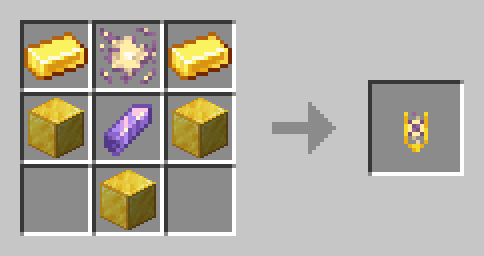

The artifact of levitation is a very rare item that can be obtained by combining gold,
amethyst and an Antigravity shard in the crafting table:

After using it, the player recieves the Levitation II effect for 12.5 seconds.
It can be used infinitely, but caution is advised, as you still receive fall damage!
v0.1: Added the Artifact of Levitation
v0.2: Norhvals can no longer drop Artifacts of Levitation